Mobiilne tunniplaan
Flashivaba tunniplaan nutiseadmetes
Arti Zirk ja
Kaili Zirk
Väike-Maarja Õppekeskus ja Gümnaasium
Kes me oleme?
Arti
Kaili
Väike-Maarja
Õppekeskus
Gümnaasium
4. kursus
11. klass
Millega tegeleme?
- Robootika ring 4. aastat
- First Lego League (FLL)
- Robotex
- Noor Meister
- Rakvere Ideede Laat
Idee sünd
Meie kool kasutab aSc TimeTables tunniplaani programmi, mis genereerib Flashi põhist tunniplaani,
mida nutiseadmest vaadata ei saa
Idee sünd
15. veebruar 2013 — esimesed koodiread
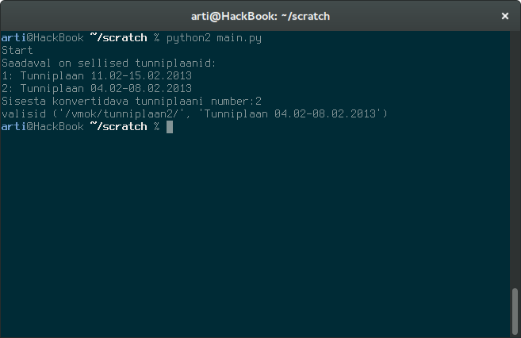Uus algus
23. aprill 2014 — koolitundide raames uuesti alustamine
Python — programmeerimiskeel
Beautiful Soup teek — töötleb koolikodulehe HTML koodi
Requests teek — kooli serveriga suhtlemiseks
SWFTools — programmide kogumik
Flash'st pildifailide tegemiseks
Väljanägemine aprillis 2014
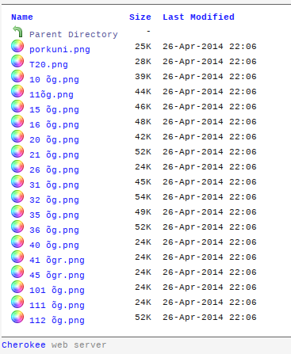Korraliku veebi kirjutamine
Mai 2014 —veebi koodiosa kirjutamine
Flask teek —tekitab veebilehti
Twitter Bootstrap —veebi kujundus

Uus veebileht Mai 2014
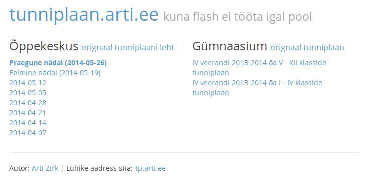Uus veebileht nutiseadmes Mai 2014
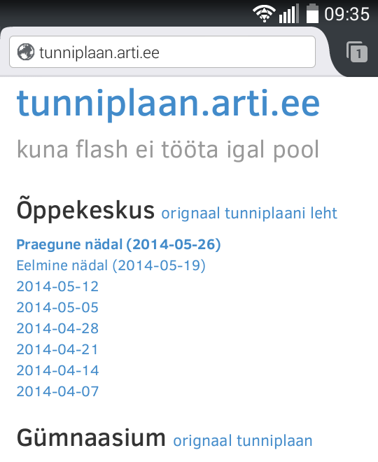 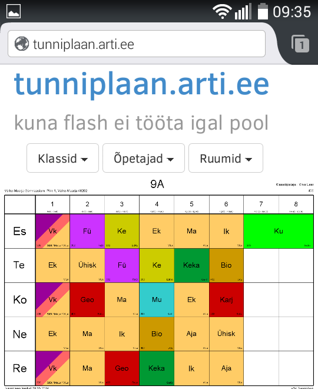Kasutuse analüüs
- 29. august 2014 — kasutusandmete kogumise algus
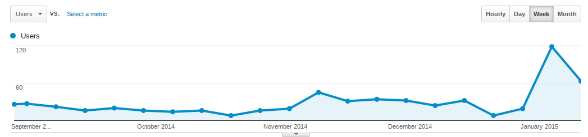
Kasutuse analüüs
- keskmiselt iga kuu 88 kasutajat ehk 28% kooliperest
(koolipere: 43 - gümnaasium, 162 - põhikool, 116 - õppekeskus) - jaanuaris 2015 kasutajate arv tõusis 187-ni (19.jaanuar seisuga)
- suurim kasutajate arv ühel päeval 54 (10. jaanuar, laupäev)
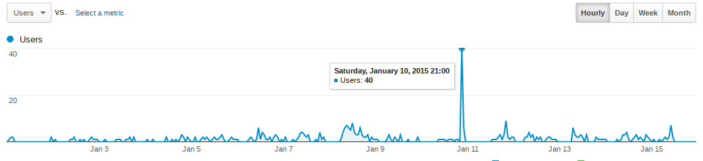
Reklaam-teade kooli stendidel
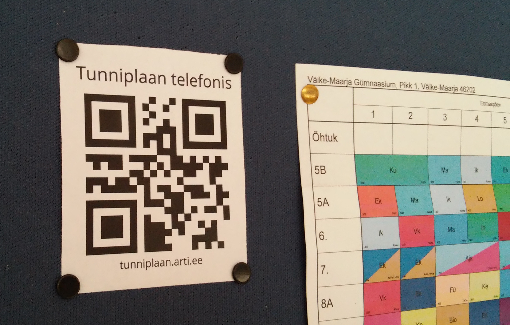Parendused veebis Jaanuar 2015
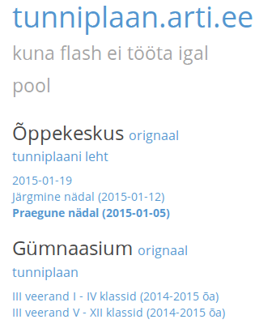 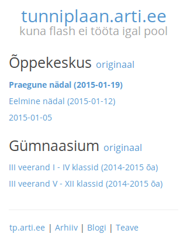Tagasiside küsitlus Jaanuar 2015
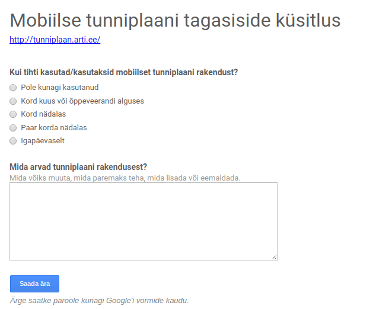Tagasiside küsitlus Jaanuar 2015
- 23 vastajat
- 56% vastanutest kastutavad tunniplaani rakendust vähemalt kord nädalas
- arvamusi oli lahe lugeda

Kasutajate arvamused
Telefonis mugav kasutada. Meeldib, et nii õppegrupid kui õpetajad on tähestikulises järjekorras.
Väga asjalik, sest veerandi alguses oli mure, et telefoniga ei saanud rakendust avada.
Väga mugav ja käepärane on seda kasutada.
Just avastasin selle rakenduse ja kindlasti hakkan kasutama!